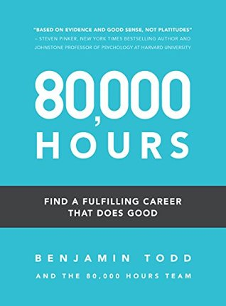

80,000 Hours: Find a fulfilling career that does good
Benjamin Todd
Rating 3/5
If you’ve read Doing Good Better, you can totally skip this book. It expands into the research the 80000 hours organisation has done regarding careers and their impacts, so this book would be useful for young people looking to start a career or older folks looking to pivot/doing a reality check on their impact. Sometimes, the book reads like a curated webpage, which it totally is.